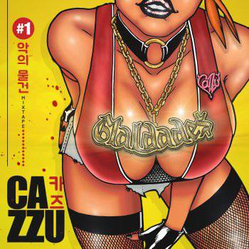

Cancionero | |
|
|
R.I.P Maté to' mi sentimiento', baby Me rompiste el corazón Yeah, Cazzu, baby Yeh-yeh, mm, ah Eso' hater te mintieron, ganaron el juego Solo me dejaste en el cora' un par de agujero Que no me hablen del amor, que yo ya no le' creo Ahora ando jugando a ver quién dispara primero Y pla-pla-pla-pla, dame to'a la plata Nunca entendí na' del amor, no sé de qué se trata Me dijo: "vos sos la mejor" y tenía 20 gata' Pero te fortalece lo que no te mata Y ahora ando fresh-fresh, baby, siempre cool Maté to' mi' sentimiento' con un AK full Los enterré bajo el suelo, dentro de un baúl Al corazón rest in peace, brindo a su salud Y ahora ando fresh-fresh, baby, siempre cool Maté to' mi' sentimiento' con un AK full Los enterré bajo el suelo, dentro de un baúl Al corazón rest in peace, brindo a su salud Hey, no va a volver a conseguir un booty como este De todo el flow, de todo el swing, lo mejor del oeste Vas a llorar por mí, lo juro, que el cielo es celeste Y yo voy a olvidarte cueste lo que cueste Y ese melodrama me lo veo venir Qué bla-bla-bla, te confundiste y me querés a mí Que desde que te fuiste no puedo dormir Que cuando me siento triste no sé a dónde ir, baby Y no sé qué es mentira o que es verdad Solo sé que ya no siento nada, na' de na (na' de na') Voy a pedir un alma nueva pa navidad Aunque por un par de millones lo podemos arreglar Sí, le vendo mi alma al diablo, que me dé dinero Y el talento pa matar a todo eso' rapero' Una Lambo color de rosa pa llegar primero Y cortarle el cuello a Cupido por embrollero Y si le vendo mi alma al diablo, que me dé dinero Y el talento pa matar a todo eso rapero' Una Lambo color de rosa pa llegar primero Y cortarle el cuello a Cupido por embrollero Y así ando esquivando disparos, me paro Entre tantos feka' veo todo claro De todo el mercado, el producto más caro This bitchies know me, they're talking about me Y ahora ando fresh-fresh, baby, siempre cool Maté to' mis sentimientos con un AK full Los enterré bajo el suelo, dentro de un baúl Al corazón rest in peace, brindo a su salud Y ahora ando fresh-fresh, baby, siempre cool Maté to' mis sentimientos con un AK full Los enterré bajo el suelo, dentro de un baúl Al corazón rest in peace, brindo a su salud Mate to' mi sentimiento Me rompiste el corazón, yeah
|